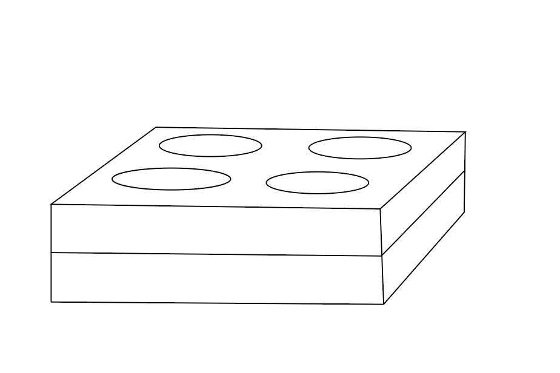

Inspiring Digging in the Domestic Rabbit

Background
For the midterm, Tinsley and I were inspired to try and think about engagement for a domestic rabbit. We came upon the idea for this animal focus after thinking about wildlife that you can see in an urban environment. One interesting thing we found was that while wild rabbits (specifically the Eastern Cottontail) were once roaming the parks in Manhattan and its Boroughs, their population dwindled and the last one was seen in Central Park in 2006.
We then began looking at domestic rabbits and the differences between these species and their wild cousins, only to find out that (primarily due to the speed at which rabbits breed) rabbits have been banned from pet shops in NYC due to overpopulation of domestic rabbits in shelters around the city. This got us thinking about how we could encourage a wild behavior in a domestic rabbit population so that if they ever had to return to the wild (unfortunately, it is common for rabbit owners to drop unwanted rabbits into the wild) they would be better suited for survival.
AEIOU Exercise
Activities
Drink same amount of water as a 20lb dog each day
Daily playtime (at least 4 hours of playtime per day: time to run around, explore, etc. especially if the rabbit is housed in a cage not an open room)
They do not hone the digging skill like their wild brothers who borough under the ground in tunnels
Best-case scenario can run up to 30 mph but very rare
https://www.fauna-care.com/post/8-enrichment-activities-to-do-with-your-rabbit
Environment
Hay (keeps it fresh and encourages them to eat more)
They like to run through tunnels
Interaction
Love & Attention (including petting and snuggling)
Cuddling with other rabbits
Someone on Youtube taught their rabbit to use a claw machine
https://www.youtube.com/watch?v=XxdMkegP5CA
Object
Food = lettuce, kale, field greens, fresh vegetables
Pellets (food)
Water (from a dish not a water bottle because they are not natural)
Behavior Mapping (3 Rabbits Observed)

Brainstorm (Initial vs. Grouped)


Concept: Inspire Digging/Tunneling via Scent
For our initial concept, we explored designing a multi-level floor in which the rabbit can dig based on sensing a scent from a particular area/compartment. Rabbits have a very keen sense of smell and even have scent glants on their chin. While humans have 6 million scent receptors, rabbits have 50 million in comparison (and 100 million scent cells). Therefore, combining their keen sense of smell with a digging machine, we hope to increase the rabbits' ability to dig.
